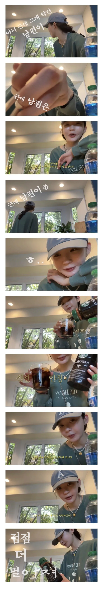

강민경이 친구들과 점점 멀어지는 이유
댓글
학교다닐땐 학교 학원 게임 축구 이야기 하고
취업하고선 직장 선배 출퇴근 술한잔 이야기 하고
결혼정년기땐 결혼 아이 배우자 이야기 하고
어찌보면 저 친구들이 자연스러운 일이지..
결혼“정년기”요...?
결혼은 정년 없나요? 하고싶을거같은데..
어쩔수없음
이젠 소개팅 안 나오시나?
몇년 전에 지인이 소개팅 받을때 나오셨다고 썰 좀 풀던데
연예인은 소개팅도 무섭네 다 떠벌리고 다니니..
그래서 보통은 입 무겁거나 관련 업종이라 연예인 그닥 안 신기해하는 사람한테만 소개해주는데, 저 지인 새끼랑 저 댓글 싼 새끼 무리는 못 걸러내셨네
뭐하는 사람이길래 소개팅이 ㄷㄷ
애교가 엄청 많아서 너무 귀엽다던데
주댕이 단속하고 다녀라 남 사생활 시시콜콜 흘리고 다니지말고
사는게 그래...옛날에 우리가 얼마나 재밋었는지 해봐야 지금 당장 와이프랑 아이랑 뭐했는지 미래에 대한 무슨 준비를 하고있는지 같이 듣고 고민 같이 말하는게 현실적이라.. 그렇게 흘러가다보니 아이가 없는 집따로, 결혼을 아에 안한 집따로 결국엔 갈리더라고. 그래도 다같이 모이면 서로 한마디씩 하게 이슈를 돌리지 ㅋㅋㅋ 재미는 없어도
저건 어쩔수 없음 결혼 한 사람들은 당연히 내 생활에 직접적인 이슈를 같이 나누고 싶지 결혼해서 애 있으면 혼자 뭐 즐길 시간이 얼마나 된다고 개인이야기 하겠음 개인 이야기는 30분 하면 소재고갈이고 남편 애기 이야기는 날을 새서라도 소재가 안떨어지니
확신의 내 아내상
남 얘기 안하는게 어디냐
가고자 하면 금방 갈것같은데
눈에차는사람이없나바
나랑 결혼하면 해결될텐데
너는 진짜 이기적인 놈이구나!
남편 얘기 왜이래함 ㅋㅋㅋㅋ 결혼하면 다른가 유부남들 모이면 아내 얘기함?
잘있제? 끝
남편들은 모이면 주로 자식들 이야기를 합니다
여자들은 뒷담화가 스포츠라서
여자 특징이라고 함
미혼일때도 남친생기면 못보자너
아내얘기를 계속 하는게 아니고
얘기하다보면 가족얘기 아내얘기 처가얘기 이런게 자연스레 스몰톡처럼 이어지는거지
이거는 그냥 여자 종특인듯
역시 학생때가 최고였다
학창시절에나 공통 관심사가 많았지
각자의 삶으로 흩어져서 관심사가 달라지면 저건 어쩔 수가 없음
그 중 결혼 출산이 제일 크리티컬하고
그래서 오래된 친구를 봐도 예전 이야기만 하거나 삶이 비슷해서 그나마 관심사가 겹치는 애들끼리 자주 보게 되더라고
남들처럼 산다는 건 대단한 축복이자 성과일지도
원래 그래 직장 결혼등으로 무리가 갈림
개그 파트너 결혼식 할 때 표정 생각나네 ㅋㅋ